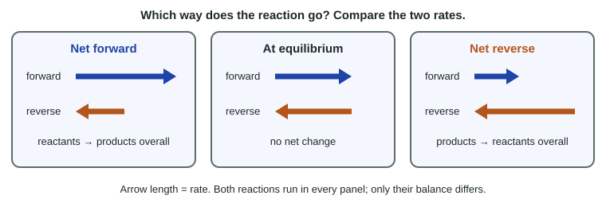

Direction of Reversible Reactions
A mixture of reactants and products has a net reaction in the direction of the faster reaction: forward when the forward rate is larger, reverse when the reverse rate is larger, and none when they are equal.
Part 1 · Hook
Why this matters
Part 2 · Before you start
What this builds on
Part 3 · Prerequisite check
Quick check before you start
1. Which statement is true at chemical equilibrium?
- The forward and reverse rates are equal
- The forward and reverse reactions have stopped
- The reactant and product concentrations are equal
- Only the forward reaction occurs
Show the answer
Equal rates keep every concentration constant; both reactions continue.
- Correct: The forward and reverse rates are equal:
- The forward and reverse reactions have stopped:
- The reactant and product concentrations are equal:
- Only the forward reaction occurs:
2. Raising the concentration of a reactant usually does what to the rate of the reaction that uses it?
- Increases it
- Decreases it
- Has no effect
- Reverses it
Show the answer
More particles per liter means more effective collisions each second.
- Correct: Increases it:
- Decreases it:
- Has no effect:
- Reverses it:
3. A catalyst speeds up a reaction by
- providing a pathway with a lower activation energy
- raising the temperature
- being used up as a reactant
- raising the energy of the products
Show the answer
A catalyst offers a lower-barrier pathway and is regenerated at the end.
- Correct: providing a pathway with a lower activation energy:
- raising the temperature:
- being used up as a reactant:
- raising the energy of the products:
Part 4 · See it
See it first

Part 5 · Step by step
How it works, step by step
- The forward rate is greater than the reverse ratethere is a net forward reaction: reactants fall and products rise
- Reactants are used up and products build upthe forward rate falls and the reverse rate rises
- The two rates become equalthe net reaction stops and the system is at equilibrium
- A species is added to or removed from the equilibrium mixturethe rate of the reaction that uses it changes first, so a net reaction runs until the rates are equal again
Part 6 · Key ideas
Key ideas
- The net reaction goes in the direction of the faster reaction: forward if forward > reverse, reverse if reverse > forward.
- Each rate depends on the concentrations of the species that react in that direction.
- A net reaction always moves the rates toward each other, so a closed system heads to equilibrium.
- Adding or removing a species changes one rate first; the system then has a net reaction until the rates match again. A catalyst speeds both rates equally and causes no net change.
Part 7 · Misconception
A common mistake
The wrong idea: The net reaction always goes forward, from the left side of the equation to the right.
What actually happens: Direction depends only on which rate is larger. A mixture that starts rich in products has a faster reverse reaction, so it runs in reverse until the rates match.
Part 8 · Check yourself
Check yourself
Exam-style questions. Anything you miss goes into your review queue.
Data table
Butane and isobutane in a sealed vessel
Butane and isobutane have the same formula, C4H10, but different shapes. With a catalyst present, each turns into the other: butane(g) ⇌ isobutane(g). A sealed vessel at constant temperature starts with 0.010 M butane and 0.040 M isobutane. The table gives the rate of the forward reaction (butane → isobutane) and of the reverse reaction (isobutane → butane) at several times.
| Time (s) | Forward rate (× 10−4 M/s) | Reverse rate (× 10−4 M/s) |
|---|---|---|
| 0 | 3.0 | 4.8 |
| 20 | 3.7 | 4.5 |
| 40 | 4.0 | 4.4 |
| 80 | 4.2 | 4.3 |
| 150 | 4.3 | 4.3 |
| 200 | 4.3 | 4.3 |
1. Which statement describes the vessel at 0 s?
- The net reaction goes in reverse: isobutane is turning into butane overall.
- The net reaction goes forward, because the forward reaction is written first.
- The system is at equilibrium, because both reactions are happening.
- The net reaction goes forward, because more isobutane is present than butane.
Show the answer
Compare the two rates. When the reverse rate is larger, the net reaction runs in reverse: products turn into reactants faster than reactants turn into products.
- Correct: The net reaction goes in reverse: isobutane is turning into butane overall.: Right: the reverse rate (4.8) is greater than the forward rate (3.0), so isobutane is used faster than it forms.
- The net reaction goes forward, because the forward reaction is written first.: The way an equation is written does not set the direction. The faster of the two reactions does.
- The system is at equilibrium, because both reactions are happening.: Both reactions happen at every moment once both substances are present. Equilibrium needs the two rates to be equal; 3.0 and 4.8 are not.
- The net reaction goes forward, because more isobutane is present than butane.: More isobutane makes the reverse reaction faster, not the forward one, so the net change is toward butane.
2. What happens to the concentration of butane between 0 s and 80 s, and why?
- It rises: the reverse reaction makes butane faster than the forward reaction uses it.
- It falls, because the forward reaction uses butane up.
- It stays the same, because the total amount of C4H10 gas in the vessel is constant.
- It rises, because the forward rate increases over the same time.
Show the answer
A species builds up whenever the reaction that makes it is faster than the reaction that uses it. Here isobutane → butane outpaces butane → isobutane until 150 s.
- Correct: It rises: the reverse reaction makes butane faster than the forward reaction uses it.: Right: the reverse rate exceeds the forward rate over this whole stretch, so butane accumulates.
- It falls, because the forward reaction uses butane up.: The forward reaction does use butane, but the reverse reaction makes it faster still. The net change is an increase.
- It stays the same, because the total amount of C4H10 gas in the vessel is constant.: The total C₄H₁₀ is constant, but the split between the two shapes changes until the rates are equal.
- It rises, because the forward rate increases over the same time.: The rising forward rate is a result of rising [butane], not its cause. Butane rises because the reverse reaction is faster.
3. Of the times in the table, which is the first at which the system is at equilibrium?
- 150 s
- 80 s
- 200 s
- 0 s
Show the answer
Equilibrium is reached when the forward and reverse rates are equal. The first row in which they match is 150 s.
- Correct: 150 s: Right: at 150 s both rates are 4.3 × 10⁻⁴ M/s, and they stay equal at 200 s.
- 80 s: At 80 s the rates are close but not equal (4.2 and 4.3), so there is still a small net reverse reaction.
- 200 s: The system is at equilibrium at 200 s, but the rates were already equal at 150 s.
- 0 s: At 0 s the rates are 3.0 and 4.8, the farthest apart they ever are.
Graph
Adding hydrogen to an equilibrium mixture
A sealed 1.00 L flask holds H2, I2 and HI at equilibrium at constant temperature: H2(g) + I2(g) ⇌ 2 HI(g). At 100 s, extra H2 is injected, raising [H2] to 0.0600 M at once. The flask then settles again; at the new equilibrium, [I2] = 0.0103 M.
HIH₂I₂
Data table
| Time (s) | HI | H₂ | I₂ |
|---|---|---|---|
| 0 | 0.14 | 0.02 | 0.02 |
| 25 | 0.14 | 0.02 | 0.02 |
| 50 | 0.14 | 0.02 | 0.02 |
| 75 | 0.14 | 0.02 | 0.02 |
| 100 | 0.14 | 0.02 | 0.02 |
| 110 | 0.151 | 0.055 | 0.015 |
| 120 | 0.156 | 0.052 | 0.012 |
| 135 | 0.158 | 0.051 | 0.011 |
| 150 | 0.159 | 0.051 | 0.011 |
| 175 | 0.159 | 0.05 | 0.01 |
| 200 | 0.159 | 0.05 | 0.01 |
4. Right after the H2 is injected at 100 s, how do the two rates compare?
- The forward rate is now greater than the reverse rate.
- The reverse rate is now greater than the forward rate.
- Both rates increase by the same amount, so they stay equal.
- Both rates stay the same, because the temperature did not change.
Show the answer
Adding a reactant changes the forward rate first. With the forward rate now larger, the net reaction goes forward until the rates are equal again.
- Correct: The forward rate is now greater than the reverse rate.: Right: more H₂ means more H₂-I₂ collisions each second, so the forward rate jumps while the reverse rate, set by [HI], has not yet changed.
- The reverse rate is now greater than the forward rate.: The reverse reaction uses HI, and [HI] did not change at the moment of injection. It is the forward reaction that speeds up.
- Both rates increase by the same amount, so they stay equal.: Only the forward reaction uses H₂. Adding H₂ speeds up that reaction alone, so the rates become unequal.
- Both rates stay the same, because the temperature did not change.: Rates depend on concentrations as well as temperature. Raising [H₂] raises the rate of the reaction that uses H₂.
5. Which evidence from the graph shows that the net reaction runs forward after 100 s?
- [HI] rises while [I2] falls.
- [H2] jumps up at 100 s.
- [H2] ends higher than it was before 100 s.
- The three curves are flat before 100 s.
Show the answer
The direction of a net reaction shows up in which concentrations rise and which fall. After 100 s, HI (product) rises and I₂ (reactant) falls.
- Correct: [HI] rises while [I2] falls.: Right: a product building up while a reactant is used is what a net forward reaction looks like.
- [H2] jumps up at 100 s.: The jump is the injection itself, not a reaction. The evidence of reaction is what happens to the concentrations afterward.
- [H2] ends higher than it was before 100 s.: That shows H₂ was added, but it does not show a direction; H₂ is higher because only part of the added H₂ reacts.
- The three curves are flat before 100 s.: Flat curves before 100 s show the first equilibrium. They say nothing about what happens after the injection.
6. For N2O4(g) ⇌ 2 NO2(g), the rate of each reaction is given per N2O4 molecule: N2O4 splits at 6.0 × 10−4 M/s and re-forms at 2.5 × 10−4 M/s. Calculate the net rate at which [NO2] increases.
Type a number and its unit.
Show the answer
Net change in N₂O₄: 6.0 × 10⁻⁴ − 2.5 × 10⁻⁴ = 3.5 × 10⁻⁴ M/s, used up. Two NO₂ form per N₂O₄: 2 × 3.5 × 10⁻⁴ = 7.0 × 10⁻⁴ M/s.
- Answer: 7.0 × 10-4 M/s
7. The system 2 NO2(g) ⇌ N2O4(g) is at equilibrium. Which changes, made at constant temperature, would make the reverse rate greater than the forward rate for a while? Select all that apply.
- Adding N2O4
- Removing some NO2
- Adding NO2
- Removing some N2O4
Show the answer
The reverse rate wins when either its reactant (N₂O₄) is added or the forward reaction's reactant (NO₂) is taken away.
- Correct: Adding N2O4: Right: the reverse reaction uses N₂O₄, so it speeds up first.
- Correct: Removing some NO2: Right: the forward reaction uses NO₂, so it slows first, leaving the reverse reaction faster.
- Adding NO2: More NO₂ speeds up the forward reaction, not the reverse.
- Removing some N2O4: Less N₂O₄ slows the reverse reaction, so the forward reaction becomes faster.
Part 9 · Summary
Summary
Part 10 · Up next
What comes next
Part 11 · Connections